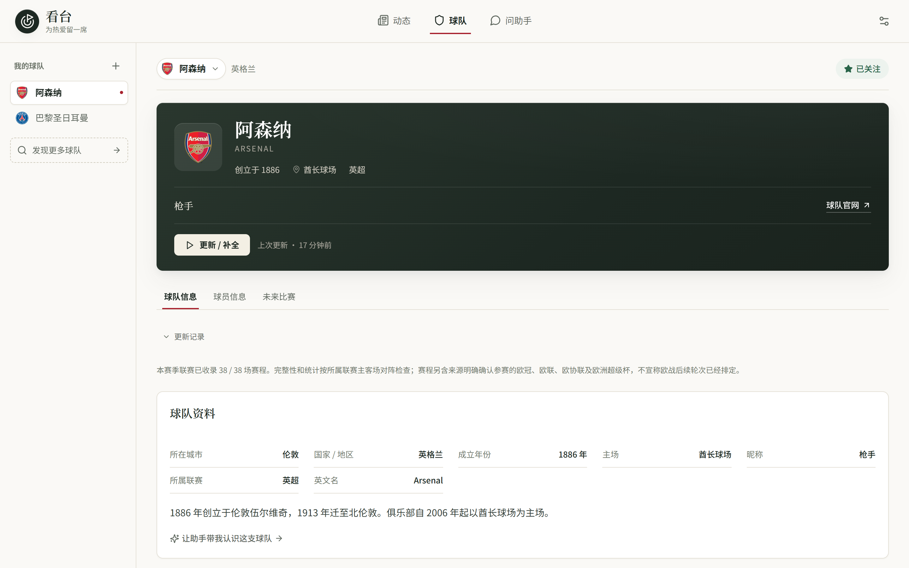
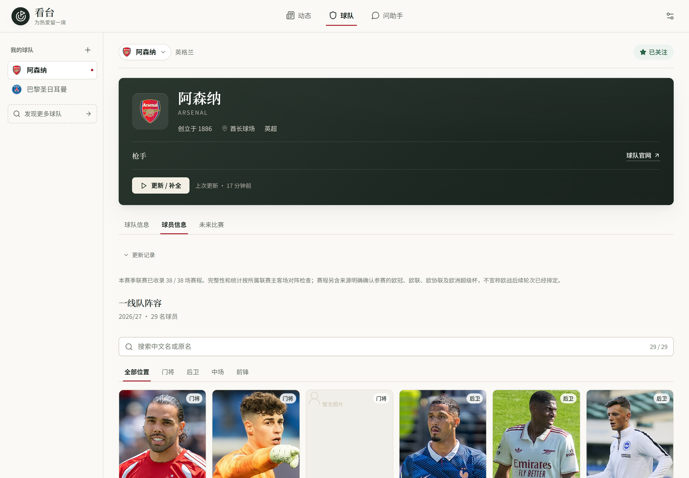

动态
按球队阅读中文消息流。英文报道由模型整理成中文，配图来自来源自身声明，每条消息都标注来源层级。
- 官网 / 数据源 / 媒体 / 社区分层呈现
- 展开后仍为中文，可点链接核对原文
- 就一条消息继续追问助手
动态、球队、问助手。采集、核验、调度与失败重试全部在后台完成，界面上不出现技术细节。
按球队阅读中文消息流。英文报道由模型整理成中文，配图来自来源自身声明，每条消息都标注来源层级。
资料、一线队名单与有来源的照片、赛季表现、积分榜、胜平负与主客场图表、未来赛程。数值以数据源为准。
直接对话，或从今日速览、比赛前瞻、赛后复盘、转会核验、战术讲解进入。回答带引用，引用只来自本轮读过的原文。
这些不是功能列表，而是每一次取舍的依据。它们来自被真实 bug 换来的边界。
你看到的是“谁在什么时候说了什么”。我们不给消息盖“已核实”的章，也不因为无法确认就删掉它。真伪由你判断。
官网直接陈述，媒体写“据 X 报道”，社区写“社区有说法”并附认同量。社区源不是低一等的媒体源，它的价值在于时效与现场性。
比分、阵容、成员关系、照片都必须来自可追溯的采集。缺数据就留空，不生成假肖像，也不用模型填补事实字段。
一张球队页、一屏阵容、一段对话。桌面与窄屏各自排版，不做简单的等比缩放。





需要 Python 3.11+ 与 Node.js 22+。Windows 下双击启动脚本即可，其余平台按下面四步执行。
创建虚拟环境，安装固定版本的 Python 依赖。
python -m venv .venv
.\.venv\Scripts\python.exe -m pip install -r requirements.txt -c requirements.lock.txt
安装前端依赖并构建。首次构建会先生成球队索引。
npm ci
npm run build
打开 http://127.0.0.1:9080/。端口被系统占用时用 TOUCHLINE_PORT 换一个。
.\.venv\Scripts\python.exe -m uvicorn server.main:app --host 127.0.0.1 --port 9080
在设置里添加模型服务商（地址、协议、密钥），选择一个模型；然后关注一支球队，点击动态页的「启动」。